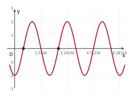
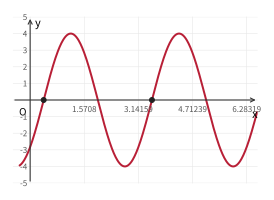
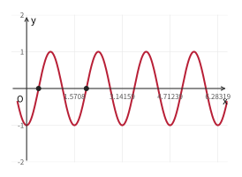

ホーム ＞ 数学II ＞ 一般角と三角関数のグラフ
別冊練習問題 8 の解答 グラフから y=a sin(bθ−c) の係数を読み取る
(1) \(y=a\sin(b\theta-c)\)（\(a>0,\ b>0,\ 0\leqq c<\pi\)）のグラフが図のようになった。最大値 \(2\)、周期 \(\dfrac{2 \pi}{3}\)、\(\theta=\dfrac{\pi}{6}\) で \(y=0\) から増加する。\(a,b,c\) を求めよ。
振幅
最大値 \(2\)、最小値 \(-2\) より \(a=2\)。

周期
周期 \(\dfrac{2 \pi}{3}\) より \(\dfrac{2\pi}{b}=\dfrac{2 \pi}{3}\)、\(b=3\)。
ずれ
\(y=0\) で上り始める点が \(\theta=\dfrac{\pi}{6}\) だから \(b\theta-c=0\ \Rightarrow\ c=\dfrac{\pi}{2}\)。
式
\[y=2\sin\left(3 \theta - \dfrac{\pi}{2}\right)\]【答案】
\[a=2,\ b=3,\ c=\dfrac{\pi}{2}\]答
(2) \(y=a\sin(b\theta-c)\)（\(a>0,\ b>0,\ 0\leqq c<\pi\)）のグラフが図のようになった。最大値 \(4\)、周期 \(\pi\)、\(\theta=\dfrac{\pi}{8}\) で \(y=0\) から増加する。\(a,b,c\) を求めよ。
振幅
最大値 \(4\)、最小値 \(-4\) より \(a=4\)。

周期
周期 \(\pi\) より \(\dfrac{2\pi}{b}=\pi\)、\(b=2\)。
ずれ
\(y=0\) で上り始める点が \(\theta=\dfrac{\pi}{8}\) だから \(b\theta-c=0\ \Rightarrow\ c=\dfrac{\pi}{4}\)。
式
\[y=4\sin\left(2 \theta - \dfrac{\pi}{4}\right)\]【答案】
\[a=4,\ b=2,\ c=\dfrac{\pi}{4}\]答
(3) \(y=a\sin(b\theta-c)\)（\(a>0,\ b>0,\ 0\leqq c<\pi\)）のグラフが図のようになった。最大値 \(1\)、周期 \(\dfrac{\pi}{2}\)、\(\theta=\dfrac{\pi}{8}\) で \(y=0\) から増加する。\(a,b,c\) を求めよ。
振幅
最大値 \(1\)、最小値 \(-1\) より \(a=1\)。

周期
周期 \(\dfrac{\pi}{2}\) より \(\dfrac{2\pi}{b}=\dfrac{\pi}{2}\)、\(b=4\)。
ずれ
\(y=0\) で上り始める点が \(\theta=\dfrac{\pi}{8}\) だから \(b\theta-c=0\ \Rightarrow\ c=\dfrac{\pi}{2}\)。
式
\[y=\sin\left(4 \theta - \dfrac{\pi}{2}\right)\]【答案】
\[a=1,\ b=4,\ c=\dfrac{\pi}{2}\]答